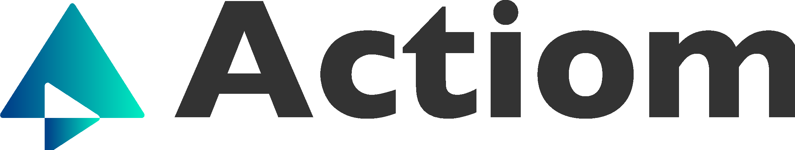

Asistente ACTIOM
En línea · responde al instante
Configura tu clave de API de Anthropic en
index.html para activar el asistente.

Certificados de Ahorro Energéticoindex.html para activar el asistente.